library(car)
library(dplyr)
library(performance)
library(DHARMa)
library(emmeans)modelo SUPERVIVENCIA EPIFITAS
Relocación Epifitas a la puna
Paquetes
Base de datos y preparacion de las variables para los modelos.
Quite los individuos despues de muertos
# NUNCA NECESITAS TO DO "SETWD" CUANDO USAS PROYECTOS
# Borra estas tres líneas
#setwd("C:/Users/edith clemente arena/Desktop/EPIFITAS -GRADIENTE/treeline-epiphytes/treeline-epiphytes/Doble_filtro/Data")
expdata <- read.csv("../Data/relocadata.csv",
header = TRUE, sep = ";",
stringsAsFactors = FALSE)
str(expdata) # Estructura de la base de datos'data.frame': 152 obs. of 20 variables:
$ branch_ID : chr "B01" "B01" "B01" "B01" ...
$ time : chr "T1" "T1" "T2" "T2" ...
$ date : chr "21.04.2025" "21.04.2025" "21.06.2025" "21.06.2025" ...
$ relocation : chr "true" "true" "true" "true" ...
$ dead_alive : chr "alive" "alive" "alive" "alive" ...
$ epi_ID : chr "BE18" "BE19" "BE18" "BE19" ...
$ family : chr "Ericaceae" "Polypodiaceae" "Ericaceae" "Polypodiaceae" ...
$ genus : chr "Demosthenesia" "Grammitis" "Demosthenesia" "Grammitis" ...
$ morphospecies : chr "Demosthenesia buxifolia" "Grammitis personata" "Demosthenesia buxifolia" "Grammitis personata" ...
$ coverage_branch : int 60 1 60 1 NA NA NA NA 10 10 ...
$ reproductive_state : chr "Vegetative " "Sterile" "Vegetative " "Sterile" ...
$ stem_length : chr "17" "" "17,2" "" ...
$ no_shoots : int 0 0 0 0 NA NA NA NA 0 0 ...
$ no_pseudobulbs : int NA NA NA NA NA NA NA NA NA 0 ...
$ no_leaves : int 22 2 23 2 NA NA NA NA 11 21 ...
$ length_longest_leaf: chr "" "9,6" "" "9,3" ...
$ ramification_1 : int 0 NA 0 NA NA NA NA NA 0 NA ...
$ ramification_2 : int 0 NA 0 NA NA NA NA NA 0 NA ...
$ no_stems : int 37 NA 30 NA NA NA NA NA 11 4 ...
$ X : chr "" "" "" "" ...##Preparar tabla de datos
data_model <- expdata[, c("epi_ID", "dead_alive", "relocation", "time", "branch_ID")]
data_model$time <- factor(data_model$time)
#recodificar variables
data_model$survive <- ifelse(data_model$dead_alive == "alive", 1, 0)
data_model$relocation[data_model$relocation == "true"] <- "puna"
data_model$relocation[data_model$relocation == "false"] <- "bosque"
data_model$relocation <- factor(data_model$relocation)
data_model$branch_ID <- factor(data_model$branch_ID)
data_model$epi_ID <- factor(data_model$epi_ID)
#QUITA LOS MUERTOS
data_model <- data_model %>%
arrange(epi_ID, time) %>%
group_by(epi_ID) %>%
mutate(dead_seen_before = lag(cumany(dead_alive == "dead"), default = FALSE)) %>%
filter(!dead_seen_before) %>%
ungroup() %>%
dplyr::select(-dead_seen_before)
#Verificacion
data_model %>%
arrange(epi_ID, time) %>%
dplyr::select(epi_ID, time, dead_alive, survive) %>%
print(n = 150)# A tibble: 136 × 4
epi_ID time dead_alive survive
<fct> <fct> <chr> <dbl>
1 BE01 T1 alive 1
2 BE01 T2 alive 1
3 BE01 T3 alive 1
4 BE01 T4 alive 1
5 BE02 T1 alive 1
6 BE02 T2 alive 1
7 BE02 T3 alive 1
8 BE02 T4 alive 1
9 BE03 T1 alive 1
10 BE03 T2 alive 1
11 BE03 T3 alive 1
12 BE03 T4 alive 1
13 BE04 T1 alive 1
14 BE04 T2 alive 1
15 BE04 T3 alive 1
16 BE04 T4 alive 1
17 BE05 T1 alive 1
18 BE05 T2 alive 1
19 BE05 T3 alive 1
20 BE05 T4 alive 1
21 BE06 T1 alive 1
22 BE06 T2 alive 1
23 BE06 T3 alive 1
24 BE06 T4 alive 1
25 BE07 T1 alive 1
26 BE07 T2 alive 1
27 BE07 T3 alive 1
28 BE07 T4 alive 1
29 BE08 T1 alive 1
30 BE08 T2 alive 1
31 BE08 T3 alive 1
32 BE08 T4 alive 1
33 BE09 T1 alive 1
34 BE09 T2 alive 1
35 BE09 T3 alive 1
36 BE09 T4 alive 1
37 BE10 T1 alive 1
38 BE10 T2 alive 1
39 BE10 T3 alive 1
40 BE10 T4 alive 1
41 BE11 T1 alive 1
42 BE11 T2 alive 1
43 BE11 T3 alive 1
44 BE11 T4 alive 1
45 BE12 T1 alive 1
46 BE12 T2 alive 1
47 BE12 T3 alive 1
48 BE12 T4 alive 1
49 BE13 T1 alive 1
50 BE13 T2 alive 1
51 BE13 T3 alive 1
52 BE13 T4 alive 1
53 BE14 T1 alive 1
54 BE14 T2 alive 1
55 BE14 T3 alive 1
56 BE14 T4 alive 1
57 BE15 T1 alive 1
58 BE15 T2 alive 1
59 BE15 T3 alive 1
60 BE15 T4 alive 1
61 BE16 T1 alive 1
62 BE16 T2 alive 1
63 BE16 T3 alive 1
64 BE16 T4 alive 1
65 BE17 T1 alive 1
66 BE17 T2 alive 1
67 BE17 T3 alive 1
68 BE17 T4 alive 1
69 BE18 T1 alive 1
70 BE18 T2 alive 1
71 BE18 T3 dead 0
72 BE19 T1 alive 1
73 BE19 T2 alive 1
74 BE19 T3 dead 0
75 BE20 T1 alive 1
76 BE20 T2 alive 1
77 BE20 T3 dead 0
78 BE21 T1 alive 1
79 BE21 T2 alive 1
80 BE21 T3 dead 0
81 BE22 T1 alive 1
82 BE22 T2 alive 1
83 BE22 T3 dead 0
84 BE23 T1 alive 1
85 BE23 T2 alive 1
86 BE23 T3 dead 0
87 BE24 T1 alive 1
88 BE24 T2 alive 1
89 BE24 T3 dead 0
90 BE25 T1 alive 1
91 BE25 T2 alive 1
92 BE25 T3 dead 0
93 BE26 T1 alive 1
94 BE26 T2 alive 1
95 BE26 T3 dead 0
96 BE27 T1 alive 1
97 BE27 T2 alive 1
98 BE27 T3 alive 1
99 BE27 T4 alive 1
100 BE28 T1 alive 1
101 BE28 T2 alive 1
102 BE28 T3 dead 0
103 BE29 T1 alive 1
104 BE29 T2 dead 0
105 BE30 T1 alive 1
106 BE30 T2 alive 1
107 BE30 T3 dead 0
108 BE31 T1 alive 1
109 BE31 T2 alive 1
110 BE31 T3 alive 1
111 BE31 T4 alive 1
112 BE32 T1 alive 1
113 BE32 T2 alive 1
114 BE32 T3 alive 1
115 BE32 T4 alive 1
116 BE33 T1 alive 1
117 BE33 T2 alive 1
118 BE33 T3 alive 1
119 BE33 T4 dead 0
120 BE34 T1 alive 1
121 BE34 T2 alive 1
122 BE34 T3 dead 0
123 BE35 T1 alive 1
124 BE35 T2 alive 1
125 BE35 T3 alive 1
126 BE35 T4 dead 0
127 BE36 T1 alive 1
128 BE36 T2 alive 1
129 BE36 T3 dead 0
130 BE37 T1 alive 1
131 BE37 T2 alive 1
132 BE37 T3 dead 0
133 BE38 T1 alive 1
134 BE38 T2 alive 1
135 BE38 T3 alive 1
136 BE38 T4 alive 1table(data_model$epi_ID)#cuenta cuantas observaciones por individuo
BE01 BE02 BE03 BE04 BE05 BE06 BE07 BE08 BE09 BE10 BE11 BE12 BE13 BE14 BE15 BE16
4 4 4 4 4 4 4 4 4 4 4 4 4 4 4 4
BE17 BE18 BE19 BE20 BE21 BE22 BE23 BE24 BE25 BE26 BE27 BE28 BE29 BE30 BE31 BE32
4 3 3 3 3 3 3 3 3 3 4 3 2 3 4 4
BE33 BE34 BE35 BE36 BE37 BE38
4 3 4 3 3 4 table(data_model$time, data_model$survive)#ver los vivos o muertos por tiempos
0 1
T1 0 38
T2 1 37
T3 14 23
T4 2 21#write.csv(data_model, "data_model.csv", row.names = FALSE)
#Cambiar el nombre de la rama
data_model <- data_model %>%
mutate(branch_ID = case_when(
branch_ID == "B01" ~ "PU01",
branch_ID == "B02" ~ "PU02",
branch_ID == "B03" ~ "PU03",
branch_ID == "B04" ~ "PU04",
branch_ID == "B05" ~ "PU05",
branch_ID == "B06" ~ "BO06",
branch_ID == "B07" ~ "BO07",
branch_ID == "B08" ~ "BO08",
branch_ID == "B09" ~ "BO09",
branch_ID == "B10" ~ "BO10"
)) %>%
mutate(branch_ID = factor(branch_ID))Nota:
Todas las muertes se dieron en la puna y ninguna en el bosque, ¿produce separación?
los datos en los diferentes tiempos se van reduciendo porque solo quedan los vivos.
Pregunta
¿Disminuye la supervivencia de las epífitas cuando son trasladadas del treeline a condiciones de puna?
Modelos
Modelo interacción: si la relocacion afecta la sobrevivencia y cambia con el tiempo
No produce sobredispercion,
model_glm_int <- glm(
survive ~ relocation*time,
family = binomial,
data = data_model
)
summary(model_glm_int)
Call:
glm(formula = survive ~ relocation * time, family = binomial,
data = data_model)
Coefficients:
Estimate Std. Error z value Pr(>|z|)
(Intercept) 2.057e+01 4.300e+03 0.005 0.996
relocationpuna -3.062e-09 5.785e+03 0.000 1.000
timeT2 1.534e-08 6.081e+03 0.000 1.000
timeT3 -3.028e-09 6.081e+03 0.000 1.000
timeT4 -3.369e-09 6.081e+03 0.000 1.000
relocationpuna:timeT2 -1.757e+01 7.208e+03 -0.002 0.998
relocationpuna:timeT3 -2.141e+01 7.208e+03 -0.003 0.998
relocationpuna:timeT4 -1.987e+01 7.208e+03 -0.003 0.998
(Dispersion parameter for binomial family taken to be 1)
Null deviance: 102.481 on 135 degrees of freedom
Residual deviance: 40.113 on 128 degrees of freedom
AIC: 56.113
Number of Fisher Scoring iterations: 19Anova(model_glm_int)Warning: glm.fit: fitted probabilities numerically 0 or 1 occurred
Warning: glm.fit: fitted probabilities numerically 0 or 1 occurred
Warning: glm.fit: fitted probabilities numerically 0 or 1 occurredAnalysis of Deviance Table (Type II tests)
Response: survive
LR Chisq Df Pr(>Chisq)
relocation 31.807 1 1.703e-08 ***
time 36.364 3 6.272e-08 ***
relocation:time 0.000 3 1
---
Signif. codes: 0 '***' 0.001 '**' 0.01 '*' 0.05 '.' 0.1 ' ' 1#SOBREDISPERSION
check_overdispersion(model_glm_int)# Overdispersion test
dispersion ratio = 1.012
p-value = 1No overdispersion detected.#DIAGNOSTICO con residuos simulados
sim_res <- simulateResiduals(model_glm_int)
plot(sim_res)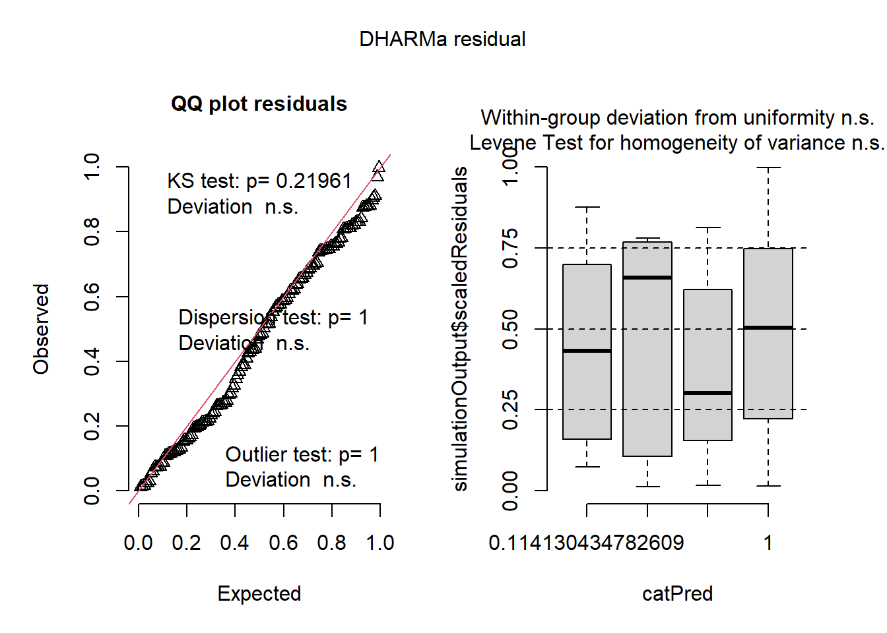
#Revisar los supuestos
dev.new()
check_model(model_glm_int)Nota: se observa la colinearidad entre la interaccion y sus partes pero es porque son parte
Modelo interaccion con rama fijo:
Provoca sobreparametrizacion y produce overfitting
model_glm_intb <- glm(
survive ~ relocation*time + branch_ID,
family = binomial,
data = data_model
)
summary(model_glm_intb)
Call:
glm(formula = survive ~ relocation * time + branch_ID, family = binomial,
data = data_model)
Coefficients: (1 not defined because of singularities)
Estimate Std. Error z value Pr(>|z|)
(Intercept) 2.157e+01 1.044e+04 0.002 0.998
relocationpuna 1.189e+00 1.207e+04 0.000 1.000
timeT2 3.806e-08 1.003e+04 0.000 1.000
timeT3 2.357e-08 1.003e+04 0.000 1.000
timeT4 2.510e-08 1.003e+04 0.000 1.000
branch_IDBO07 -1.135e-08 1.193e+04 0.000 1.000
branch_IDBO08 -1.141e-08 1.116e+04 0.000 1.000
branch_IDBO09 -8.797e-09 1.116e+04 0.000 1.000
branch_IDBO10 -1.127e-08 1.193e+04 0.000 1.000
branch_IDPU01 -2.057e+00 1.895e+00 -1.085 0.278
branch_IDPU02 -2.057e+00 1.388e+00 -1.482 0.138
branch_IDPU03 -6.416e-02 1.178e+00 -0.054 0.957
branch_IDPU04 -1.056e+00 1.214e+00 -0.870 0.384
branch_IDPU05 NA NA NA NA
relocationpuna:timeT2 -1.850e+01 1.172e+04 -0.002 0.999
relocationpuna:timeT3 -2.290e+01 1.172e+04 -0.002 0.998
relocationpuna:timeT4 -2.186e+01 1.172e+04 -0.002 0.999
(Dispersion parameter for binomial family taken to be 1)
Null deviance: 102.481 on 135 degrees of freedom
Residual deviance: 36.394 on 120 degrees of freedom
AIC: 68.394
Number of Fisher Scoring iterations: 20Anova(model_glm_intb)Warning: glm.fit: fitted probabilities numerically 0 or 1 occurred
Warning: glm.fit: fitted probabilities numerically 0 or 1 occurred
Warning: glm.fit: fitted probabilities numerically 0 or 1 occurred
Warning: glm.fit: fitted probabilities numerically 0 or 1 occurredAnalysis of Deviance Table (Type II tests)
Response: survive
LR Chisq Df Pr(>Chisq)
relocation 0
time 38.864 3 1.855e-08 ***
branch_ID 3.719 8 0.8815
relocation:time 0.000 3 1.0000
---
Signif. codes: 0 '***' 0.001 '**' 0.01 '*' 0.05 '.' 0.1 ' ' 1#SOBREDISPERSION
check_overdispersion(model_glm_intb)#sin sobredispersion# Overdispersion test
dispersion ratio = 1.007
p-value = 0.888No overdispersion detected.##DIAGNOSTICO GENERAL
sim_resb <- simulateResiduals(model_glm_intb)#El modelo NO está capturando bien la relación
plot(sim_resb)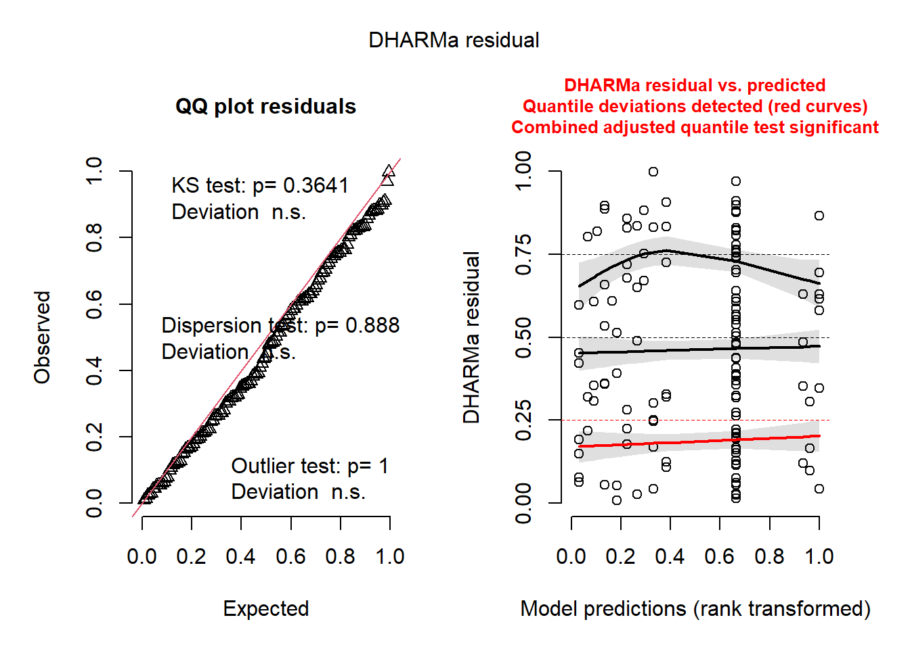
dev.new()
check_model(model_glm_intb)Solo tiene efecto significativo el tiempo, en la relocacion el modelo no puede evaluarlo correctamente probablemente por la sobreparametrizacion y la separacion perfecta de puna y bosque (todos vivos) .
Al igual que el otro modelo posee colinearidad.
NOTA
Ambos modelos poseen coeficientes bajisimos, errores estandar gigantes y p_valores raros, será porque el efecto es muy fuerte?
Glenda’s Do forest and puna differ in survival over censuses?
data_surv <- subset(data_model, time != "T1")
#Best fix: Firth logistic regression
#Using brglm2:
#install.packages("brglm2")
library(brglm2)Warning: package 'brglm2' was built under R version 4.4.3model_br <- glm(
survive ~ relocation * time,
data = data_surv,
family = binomial,
method = "brglmFit"
)
summary(model_br)
Call:
glm(formula = survive ~ relocation * time, family = binomial,
data = data_surv, method = "brglmFit")
Deviance Residuals:
Min 1Q Median 3Q Max
-2.3176 0.2374 0.2374 0.3758 1.5315
Coefficients:
Estimate Std. Error z value Pr(>|z|)
(Intercept) 3.555e+00 1.476e+00 2.409 0.016 *
relocationpuna -9.404e-01 1.711e+00 -0.550 0.583
timeT3 -1.039e-15 2.087e+00 0.000 1.000
timeT4 -1.875e-16 2.087e+00 0.000 1.000
relocationpuna:timeT3 -3.417e+00 2.311e+00 -1.479 0.139
relocationpuna:timeT4 -2.027e+00 2.415e+00 -0.839 0.401
---
Signif. codes: 0 '***' 0.001 '**' 0.01 '*' 0.05 '.' 0.1 ' ' 1
(Dispersion parameter for binomial family taken to be 1)
Null deviance: 90.431 on 97 degrees of freedom
Residual deviance: 43.166 on 92 degrees of freedom
AIC: 55.166
Type of estimator: AS_mixed (mixed bias-reducing adjusted score equations)
Number of Fisher Scoring iterations: 7#Anova(model_br)
#This is often the best replacement for your current glm() when there is separation.
#✅ Correct way to test effects in brglm2
#Fit nested models:
m_add <- glm(
survive ~ relocation + time,
data = data_surv,
family = binomial,
method = "brglmFit"
)
m_rel <- glm(
survive ~ relocation,
data = data_surv,
family = binomial,
method = "brglmFit"
)
m_time <- glm(
survive ~ time,
data = data_surv,
family = binomial,
method = "brglmFit"
)
m_null <- glm(
survive ~ 1,
data = data_surv,
family = binomial,
method = "brglmFit"
)
#Then compare them.
#1) Test the interaction
anova(m_add, model_br, test = "LRT")Analysis of Deviance Table
Model 1: survive ~ relocation + time
Model 2: survive ~ relocation * time
Resid. Df Resid. Dev Df Deviance Pr(>Chi)
1 94 41.353
2 92 43.166 2 -1.8125 #This tests:
#Does relocation × time improve the model?
#2) Test relocation effect
anova(m_time, m_add, test = "LRT")Analysis of Deviance Table
Model 1: survive ~ time
Model 2: survive ~ relocation + time
Resid. Df Resid. Dev Df Deviance Pr(>Chi)
1 95 72.169
2 94 41.353 1 30.816 2.837e-08 ***
---
Signif. codes: 0 '***' 0.001 '**' 0.01 '*' 0.05 '.' 0.1 ' ' 1#This tests:
#Does adding relocation improve the model beyond time alone?
#3) Test time effect
anova(m_rel, m_add, test = "LRT")Analysis of Deviance Table
Model 1: survive ~ relocation
Model 2: survive ~ relocation + time
Resid. Df Resid. Dev Df Deviance Pr(>Chi)
1 96 62.500
2 94 41.353 2 21.147 2.559e-05 ***
---
Signif. codes: 0 '***' 0.001 '**' 0.01 '*' 0.05 '.' 0.1 ' ' 1#This tests:
#Does adding time improve the model beyond relocation alone?#🏆 Best next step: predict survival probabilities
#Now that you have the right model, let’s get the predicted survival probabilities by treatment and census.
#✅ Recommended prediction workflow
#Option A (best): use emmeans
library(emmeans)
pred_surv <- emmeans(
model_br,
~ relocation * time,
type = "response"
)
pred_df <- as.data.frame(pred_surv)
pred_df relocation time prob SE df asymp.LCL asymp.UCL
bosque T2 0.9722222 0.03985723 Inf 0.6598719 0.9984188
puna T2 0.9318182 0.05500349 Inf 0.7146607 0.9867679
bosque T3 0.9722222 0.03985723 Inf 0.6598719 0.9984188
puna T3 0.3095238 0.10337283 Inf 0.1480026 0.5363510
bosque T4 0.9722222 0.03985723 Inf 0.6598719 0.9984188
puna T4 0.6428571 0.19561521 Inf 0.2531035 0.9053127
Confidence level used: 0.95
Intervals are back-transformed from the logit scale #This gives you:
#predicted probability of survival (prob)
#confidence intervals
#for each:
#bosque / puna
#T2 / T3 / T4
#📊 Plot predicted survival probabilities
library(ggplot2)Warning: package 'ggplot2' was built under R version 4.4.3ggplot(pred_df, aes(x = time, y = prob, color = relocation, group = relocation)) +
geom_point(size = 3) +
geom_line(linewidth = 1) +
geom_errorbar(aes(ymin = asymp.LCL, ymax = asymp.UCL), width = 0.08) +
ylim(0, 1) +
labs(
x = "Census",
y = "Predicted survival probability",
color = "Relocation"
) +
theme_classic()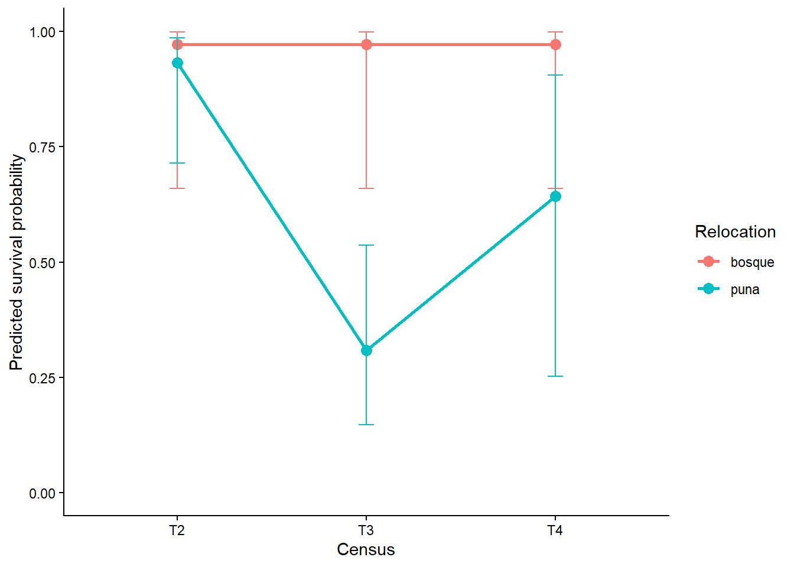
#⭐ Better figure: add the observed proportions too
#This is often the best ecological figure because it shows:
#points = observed survival proportions
#lines = model predictions
#Step 1 — Calculate observed survival by group
obs_df <- data_surv %>%
group_by(relocation, time) %>%
summarise(
obs_surv = mean(survive),
n = n(),
.groups = "drop"
)
#Step 2 — Plot observed + predicted together
ggplot() +
geom_point(data = obs_df,
aes(x = time, y = obs_surv, color = relocation),
size = 3, alpha = 0.8) +
geom_line(data = pred_df,
aes(x = time, y = prob, color = relocation, group = relocation),
linewidth = 1) +
geom_errorbar(data = pred_df,
aes(x = time, y = prob, ymin = asymp.LCL, ymax = asymp.UCL, color = relocation),
width = 0.08) +
ylim(0, 1) +
labs(
x = "Census",
y = "Survival probability",
color = "Relocation"
) +
theme_classic()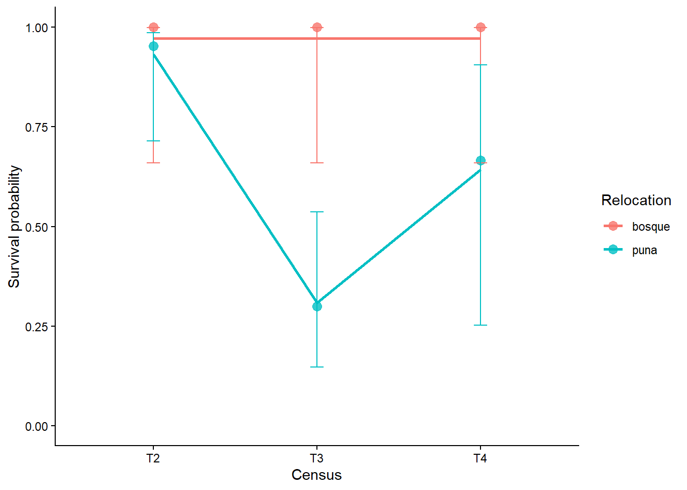
#This is probably the best figure for your paper/presentation.#⚙️ Step 1 — Prepare the data
#Make sure time is ordered correctly:
library(dplyr)
data_model <- data_model %>%
mutate(time = factor(time, levels = c("T1", "T2", "T3", "T4")))
#⚙️ Step 2 — Create numeric time
#We need numeric time for survival models:
data_model <- data_model %>%
mutate(time_num = as.numeric(time))
#So:
T1 = 1
T2 = 2
T3 = 3
T4 = 4
#⚙️ Step 3 — Collapse to one row per individual
#This is the key step:
surv_data <- data_model %>%
group_by(epi_ID) %>%
summarise(
relocation = first(relocation),
# Did the individual ever die?
event = ifelse(any(survive == 0), 1, 0),
# Time of death OR last observed time
time_to_event = ifelse(
any(survive == 0),
min(time_num[survive == 0]), # first time it died
max(time_num) # last time observed alive
)
) %>%
ungroup()
#🔍 Check the result
table(surv_data$event)
0 1
21 17 summary(surv_data$time_to_event) Min. 1st Qu. Median Mean 3rd Qu. Max.
2.000 3.000 4.000 3.579 4.000 4.000 head(surv_data)# A tibble: 6 × 4
epi_ID relocation event time_to_event
<fct> <fct> <dbl> <dbl>
1 BE01 bosque 0 4
2 BE02 bosque 0 4
3 BE03 bosque 0 4
4 BE04 bosque 0 4
5 BE05 bosque 0 4
6 BE06 bosque 0 4#Firth-corrected Cox model
#install.packages("coxphf")
library(coxphf)Warning: package 'coxphf' was built under R version 4.4.3library(survival)
cox_firth <- coxphf(
Surv(time_to_event, event) ~ relocation,
data = surv_data
)
summary(cox_firth)coxphf(formula = Surv(time_to_event, event) ~ relocation, data = surv_data)
Model fitted by Penalized ML
Confidence intervals and p-values by Profile Likelihood
coef se(coef) exp(coef) lower 0.95 upper 0.95 Chisq
relocationpuna 3.640563 1.494146 38.1133 5.058009 4885.16 20.62331
p
relocationpuna 5.591107e-06
Likelihood ratio test=20.62331 on 1 df, p=5.591107e-06, n=38
Wald test = 5.936782 on 1 df, p = 0.01482807
Covariance-Matrix:
relocationpuna
relocationpuna 2.232472Survival differed strongly between relocation treatments. Standard Cox regression showed evidence of quasi/complete separation, indicating extremely uneven mortality between groups, so treatment effects should be interpreted using penalized Cox regression and Kaplan–Meier/log-rank comparisons rather than ordinary maximum-likelihood Cox estimates.
#Best compact diagnostic script for your exact use case
#If you want a practical “run this and inspect” block, use this:
library(brglm2)
library(car)
library(DHARMa)
library(pROC)Warning: package 'pROC' was built under R version 4.4.3Type 'citation("pROC")' for a citation.
Attaching package: 'pROC'The following objects are masked from 'package:stats':
cov, smooth, varmodel_br <- glm(
survive ~ relocation * time,
data = data_surv,
family = binomial,
method = "brglmFit"
)
# 1. Summary + ORs
summary(model_br)
Call:
glm(formula = survive ~ relocation * time, family = binomial,
data = data_surv, method = "brglmFit")
Deviance Residuals:
Min 1Q Median 3Q Max
-2.3176 0.2374 0.2374 0.3758 1.5315
Coefficients:
Estimate Std. Error z value Pr(>|z|)
(Intercept) 3.555e+00 1.476e+00 2.409 0.016 *
relocationpuna -9.404e-01 1.711e+00 -0.550 0.583
timeT3 -1.039e-15 2.087e+00 0.000 1.000
timeT4 -1.875e-16 2.087e+00 0.000 1.000
relocationpuna:timeT3 -3.417e+00 2.311e+00 -1.479 0.139
relocationpuna:timeT4 -2.027e+00 2.415e+00 -0.839 0.401
---
Signif. codes: 0 '***' 0.001 '**' 0.01 '*' 0.05 '.' 0.1 ' ' 1
(Dispersion parameter for binomial family taken to be 1)
Null deviance: 90.431 on 97 degrees of freedom
Residual deviance: 43.166 on 92 degrees of freedom
AIC: 55.166
Type of estimator: AS_mixed (mixed bias-reducing adjusted score equations)
Number of Fisher Scoring iterations: 7confint(model_br) 2.5 % 97.5 %
(Intercept) 0.6627232 6.447973
relocationpuna -4.2939705 2.413194
timeT3 -4.0907893 4.090789
timeT4 -4.0907893 4.090789
relocationpuna:timeT3 -7.9463801 1.111768
relocationpuna:timeT4 -6.7602914 2.705945exp(cbind(OR = coef(model_br), confint(model_br))) OR 2.5 % 97.5 %
(Intercept) 35.00000000 1.9400684141 631.421032
relocationpuna 0.39047619 0.0136506182 11.169579
timeT3 1.00000000 0.0167260272 59.787060
timeT4 1.00000000 0.0167260272 59.787060
relocationpuna:timeT3 0.03280067 0.0003539411 3.039727
relocationpuna:timeT4 0.13170729 0.0011588915 14.968450# 2. Sparse cells / separation structure
with(data_surv, table(relocation, time, survive)), , survive = 0
time
relocation T1 T2 T3 T4
bosque 0 0 0 0
puna 0 1 14 2
, , survive = 1
time
relocation T1 T2 T3 T4
bosque 0 17 17 17
puna 0 20 6 4# 3. Residuals
data_surv$pearson_resid <- residuals(model_br, type = "pearson")
data_surv$deviance_resid <- residuals(model_br, type = "deviance")
data_surv$fitted_prob <- fitted(model_br)
plot(data_surv$fitted_prob, data_surv$deviance_resid,
xlab = "Fitted probability",
ylab = "Deviance residuals")
abline(h = 0, lty = 2, col = "red")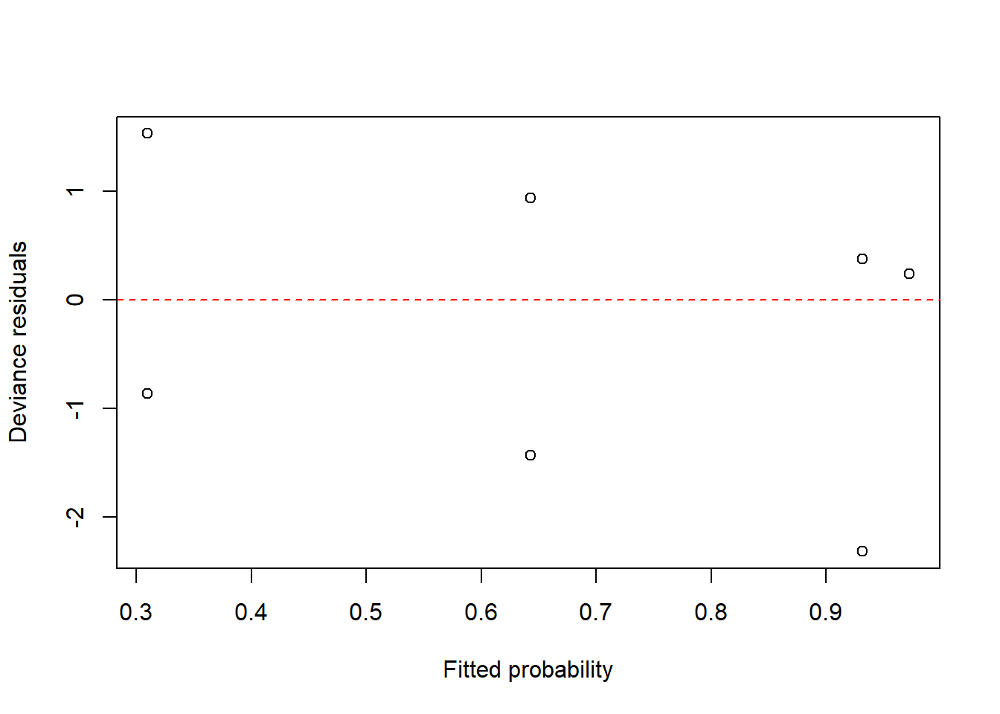
# 4. Influence
data_surv$hat <- hatvalues(model_br)
data_surv$cooks <- cooks.distance(model_br)
plot(data_surv$hat, type = "h", main = "Leverage")
abline(h = 2 * mean(data_surv$hat), col = "red", lty = 2)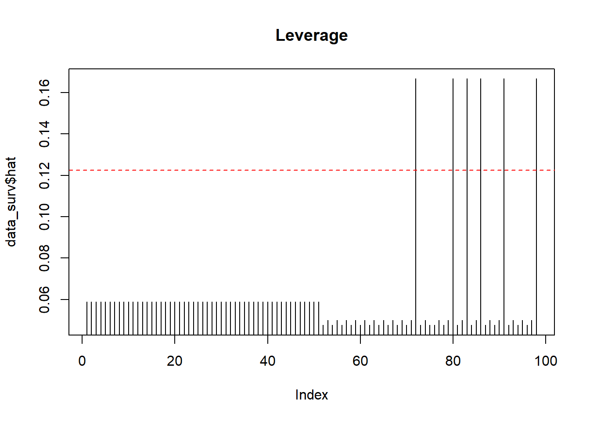
plot(data_surv$cooks, type = "h", main = "Cook's distance")
abline(h = 4 / nrow(data_surv), col = "red", lty = 2)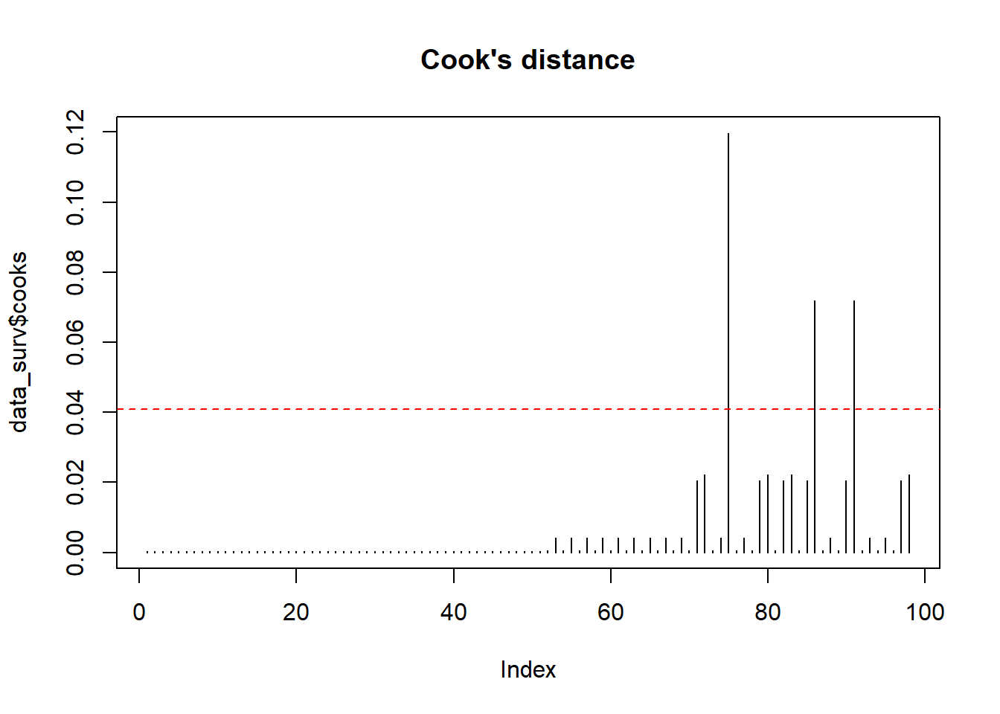
subset(data_surv, abs(deviance_resid) > 2 | cooks > 4 / nrow(data_surv))# A tibble: 3 × 11
epi_ID dead_alive relocation time branch_ID survive pearson_resid
<fct> <chr> <fct> <fct> <fct> <dbl> <dbl>
1 BE29 dead puna T2 PU04 0 -3.70
2 BE33 dead puna T4 PU05 0 -1.34
3 BE35 dead puna T4 PU05 0 -1.34
# ℹ 4 more variables: deviance_resid <dbl>, fitted_prob <dbl>, hat <dbl>,
# cooks <dbl># 5. Collinearity
vif(model_br)there are higher-order terms (interactions) in this model
consider setting type = 'predictor'; see ?vif GVIF Df GVIF^(1/(2*Df))
relocation 3.368266 1 1.835284
time 26.532233 2 2.269569
relocation:time 43.084196 2 2.562002# 6. Simulated residuals
sim_res <- simulateResiduals(model_br, n = 1000)Warning in checkModel(fittedModel): DHARMa: fittedModel not in class of
supported models. Absolutely no guarantee that this will work!plot(sim_res)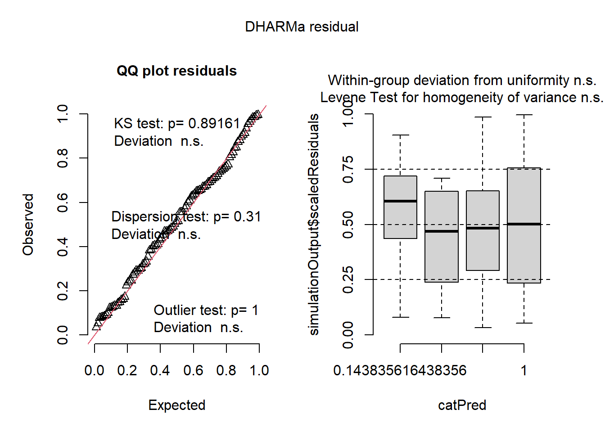
testDispersion(sim_res)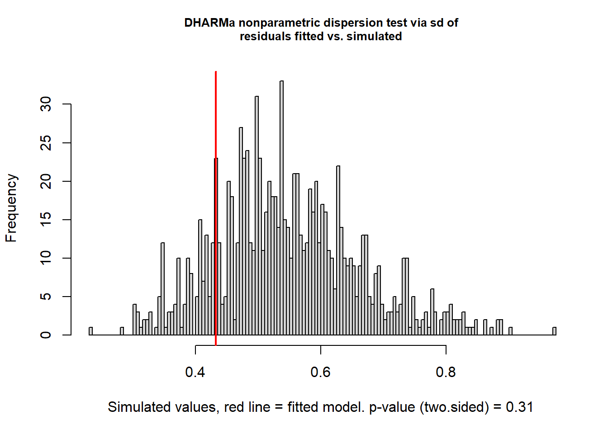
DHARMa nonparametric dispersion test via sd of residuals fitted vs.
simulated
data: simulationOutput
dispersion = 0.78711, p-value = 0.31
alternative hypothesis: two.sidedtestOutliers(sim_res)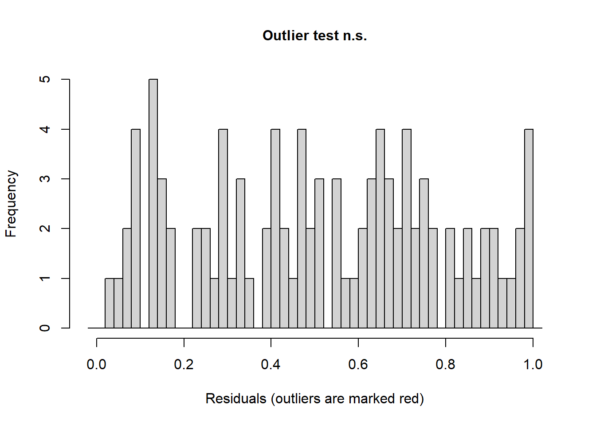
DHARMa bootstrapped outlier test
data: sim_res
outliers at both margin(s) = 0, observations = 98, p-value = 1
alternative hypothesis: two.sided
percent confidence interval:
0 0
sample estimates:
outlier frequency (expected: 0 )
0 # 7. ROC / AUC
roc_obj <- roc(data_surv$survive, fitted(model_br))Setting levels: control = 0, case = 1Setting direction: controls < casesplot(roc_obj)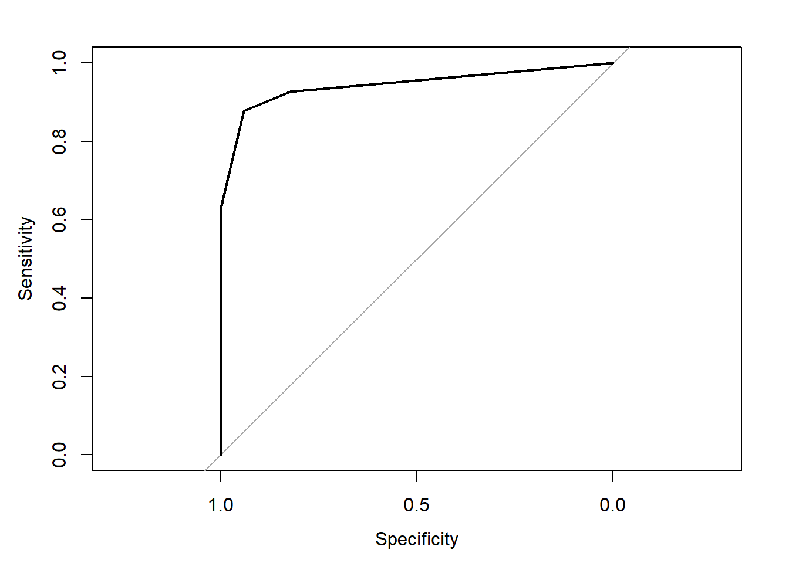
auc(roc_obj)Area under the curve: 0.9434How to write this up in a paper / thesis
A clean write-up would be:
Because the binomial GLM showed evidence of separation, we refit the model using bias-reduced logistic regression (brglm2, method = “brglmFit”). Model diagnostics included inspection of deviance residuals, leverage, Cook’s distance, variance inflation factors, and simulated residuals. Sparse outcome combinations were also examined directly using contingency tables. No severe residual misfit or undue influence was observed / [or describe what you found].
Bottom line
For Firth / bias-reduced logistic regression, the most useful diagnostics are:
cross-tabulation of predictors vs outcome (to understand separation), deviance residuals, leverage / Cook’s distance, VIF, DHARMa simulated residuals, and AUC/calibration if prediction matters.
If you want, paste your summary(model_br) output (and whether time is continuous or categorical), and I can tell you exactly which diagnostics matter most for your model and how to interpret them.